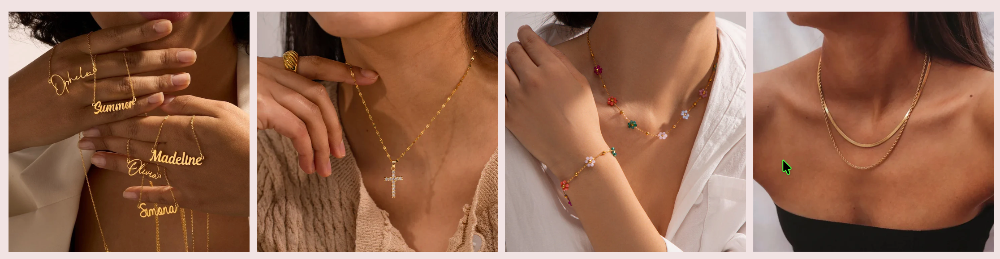

I have some exciting news to share! I've become an ambassador for Niluxy—a lovely fine jewelry brand that I've really been enjoying.
A Little Sparkle
When I started sharing my journey on TikTok, I never expected opportunities like this to come along. Niluxy reached out after seeing my content, and I loved what they're about—beautiful, elegant pieces that are actually practical for everyday wear.
About Niluxy
For those who haven't come across them, Niluxy creates jewelry using quality materials like 18K gold plating, stainless steel, pearls, and cubic zirconia. What I really appreciate is that their pieces are waterproof and durable—perfect for someone like me who's at the yard most of the time but still wants to feel put-together.
They have lovely bracelets, earrings, necklaces, and rings. I've been wearing a few of their pieces and they've held up brilliantly.
What This Means
As an ambassador, I'll be sharing some of their pieces with you over the coming months. It's a lovely opportunity and I'm grateful they thought of me.
If you fancy having a look at their collections, you can find them at niluxy.com or follow @niluxy.official on TikTok.
— Jasmine 🇬🇧🐴👧 x